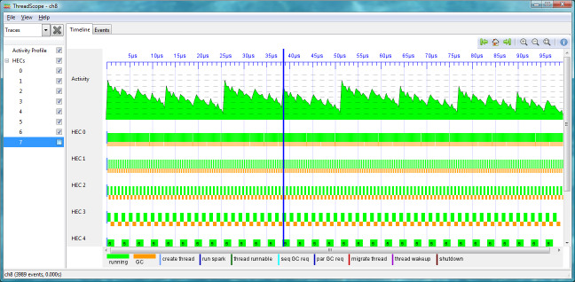
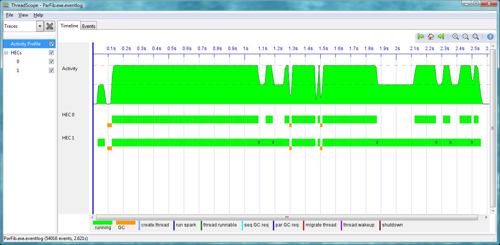

ThreadScope
17 November 2009
Donnie Jones,
donnie@darthik.com
Simon Marlow,
simonmar@microsoft.com,
http://www.haskell.org/~simonmar/
Satnam Singh,
satnams@microsoft.com,
http://research.microsoft.com/~satnams
Overview
ThreadScope is a graphical viewer for thread profile information generated by the Glasgow Haskell compiler (GHC). An example of a synthetic trace profile is shown below:

ThreadScope can be used to help debug performance issues with parallel and concurrent Haskell programs. The program has the following features.
Using ThreadScope
To compile a program for parallel profiling use the -eventlog flag and you will also want to use the -threaded flag to compile with the multi-threaded runtime e.g.
ghc -threaded -eventlog --make Wombat.hs
To execute a program and generate a profile us the -ls flag after +RTS:
./Wombat +RTS -ls -N2
The -N2 flag specifies the use of two Haskell Execution Contexts (i.e. threads). Once the program has been run it will produce a profile file called Wombat.eventlog or Wombat.exe.eventlog (depending on your operating system). You can now view this file with threadscope by specifying the eventlog filename as a command line argument or by navigating to it from the File menu of ThreadScope.
Installing ThreadScope on Windows
Ideally you would use the Haskell Platform. However, ThreadScope has a dependency on Gtk2Hs (a graphical user-interface toolkit) which can only be used with GHC 6.10.3 (the current GHC is 6.10.4). Furthermore, you currently have to use the release candidate GHC 6.12.1 in order to compile and execute programs that produce profiles for ThreadScope. So (take a deep breath) this is what you need to download:
You can now try to run ThreadScope to make sure it built correctly by viewing the built in sample trace shown above:
threadscope --test ch8
Now check to see if you can compile and profile one of the sample programs. Move into the tests directory and type:
<path of release candidate>/ghc -threaded -eventlog --make ParFib.hs
Now run the ParFib binary and create the event log:
./ParFib +RTS -ls -N2
Now view the eventlog which should look something like this on a machine with two or more cores:

Installing under Linux
For example on Ubuntu or Debian you would type:
sudo apt-get install ghc6
sudo apt-get install gtk2hs
sudo apt-get install darcs
More Information